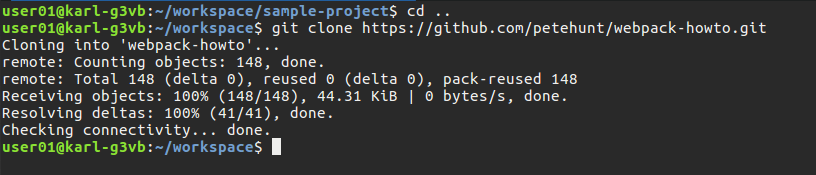

Git Commands in Detail
In this section I will walk you through using some of the most common Git commands while creating a very simple website to illustrate their use. You can use whichever text editor you prefer, but since we isntalled Atom, let's use it.
In Part 2 of this series we quickly moved through using four basic commands to add files to a Git repository with little or no explanation. This was to show how simple working with Git could be (OK, it isn't all that simple) and to avoid making the introduction complicated. In this part of the series we will go over the same four four commands, as well as $ git push more in detail. After woking through these exercises you should have a better understanding of how Git works. Let's jump right in.
A directory is a folder. Windows uses the term 'folder'. Linux calls them 'directories'.
Getting Ready
For this part of the tutorial we will create a new project and a new GitHub repository.
Create a GitHub Account
If you already have a GitHub account you can skip this step.
Create a GitHub account by going to GitHub. Give your user name some thought. GitHub is a very public place which people use to help develop their identity as a developer. You will store your code here and may in the future share it with other developers or with a potential employer to show your abilities.
Create a GitHub Repository
In the upper righ-hand corner of the GitHub page, click the '+' sign and select .

Fill out the repository details as show below and then click . Make sure to leave the other choices as is.

Create the Project Files & Directories
It doesn't matter how you create the project files as long as the file and directory names match. I'm using Linux. '~' stands for the 'home' directory and I create all my projects in a folder named 'workspace'. You do not have to create your project in the same location. I am providing command line instructions for creating the project. You could do the same using a file manager or text editor.
... and then execute the following commands. Don't worry what they mean for now, they will be explained below.
In Terminal, make sure the current directory is ~/workspace/
$ cd ~/workspace
$ mkdir sample-project
$ cd sample-project
$ touch index.html README.md
$ mkdir css
$ cd css
$ touch style.css
Your project structure should now look like this:

Let's put some content in the files.
<!DOCTYPE html>
<head>
<title>sample-project</title>
<link rel="stylesheet" href="css/style.css">
</head>
<body>
<h1>Hello World, once again.</h1>
</body>
body {
background-color: lightgray
}
#Git Tutorial ReadMe
Open index.html in a browser
Exploring Six Frequently Used Git Commands
In this part of the tutorial we will explore six of the most frequently used Git commands:
- $ git init
- $ git add
- $ git commit
- $ git remote
- $ git push
- $ git status
$ git init - Creating a New Git Repository
This project currently has no Git repository. If you look in file manager or via terminal there is no .git/ directory. If you use $ git status it will show there is no Git repository with the message, "fatal: Not a git repository (or any of the parent directories): .git".
Using $ git init to create a new repository is straight-forward. Here are steps for creating a new project with $ git init
Make sure you are in the sample-project/ directory and create the repository.
$ git init

$ git add - Staging Files
As noted in an earlier part of this tutorial series, $ git add does not add the files to the repository, it adds them to a staging area in preparation for using $ git commit which will actually put them into the repository.
You do not have to add directories to Git. As you add files Git will preserve the directory structure. Let's go through an exercise to illustrate how $ git add works.
$ git status will show that we have two files and one directory. However, as you know, there is a third file inside of css/ which $ git status does not show.
As you can see in the above screenshot, $ git status clearly shows that we have untracked files, 2 in the root and some unknow number in css/.
Using the $git add with the --all option will add all files to the staging area at once, including the style.css file inside of css/. You can also use the shortcut $ git add . (the '.' is required).
$ git add .
$ git status

You can also add files one at a time. Let's reset everything by removing the .git/ folder so we can give that a try. This will also illustrate that a Git repository is just a folder. On Mac & you can use the below command or a file manager if you prefer.
$ rm -rf .git
Using $ git status will show there is no repository.
$ git status
Re-initialize the repository and check status. Status will show the 'untracked files' again.
$ git init
$ git status
Now we can demonstrate adding one file at a time.
$ git add README.md
As you can see, only README is staged (i.e., under 'Chagnes to be commited:')

No let's explore adding multiple files instead of all. To do so, we will need to add some files to our project. We will use $ touch to create the files and $ls -l to see the newly created files
$ touch imagine.html
$ ls -l
$ cd css
$ touch master.css
$ ls -l
$ cd ..

Now we will add all files in the css/ directory. Remember, README.md was already staged and is still there.
$ git add css/*
Finally, we will add all files in the current directory that start with 'i'. This will add imagine.html and index.html to the staging area.
$ git add i*

$ git commit- Adding Files to the Repository
As already stated, $ git commit moves files from the staging area to the repository. If you look at the Git documentation you will see that $ git commit has many options. We will use only one of these -m which means message. The command will look like this:
$ git commit -m "commit message goes here"
Commit messages are serious business. It is a best practice to always have a message and if you are working with a team, committing without a message will most likely result in some form of negative feedback.
The message can and often is very short. It should describe the changes to the files being committed. To achieve this you need to stage and commit files with a related change such that your message would be something like, "Updated sidebar and related styles", for which you are likely committing a .html and .css file. If you add to this commit a change made to an unrelated .html file then your commit message becomes wordy like, 'did this to these files and that to those files, etc.'. Additionally, it becomes hard to revert one change without the other and for another developer to understand the goal of your change. Therefore, commits should include the files for one change and the message should succintly describe that change.
All of this does not mean you cannot make unrelated changes to multiple files before committing. You simply move the files for one change into the staging area and commit, then stage the files for the next change and commit.
Let's commit our files. This is the first time they are being committed and the traditional message for that is, "initial commit". Commit will move everything in the staging area to the repository. If the results of $ git status are not currently on your screen, use it first to see what you are committing.
$ git status
$ git commit -m "initial commit"

Using the above picture, let's take a closer look at the message produced by $ git commit.
| [master (root-commit) 9fe2f2a] initial commit | The commit was to branch 'master', which is the root, not a branch. The message was 'initial commit'. 9fe2fa2 is an identifer for the commit. Yours will differ. |
| 5 file changed | Right, we changed 5 files. A new files is always changed. |
| 15 insertions(+) | If you count the lines of code in the 5 files we committed there are 15 of them. Since this is the initial commit they all count as an insertions which is indicated by a (+) sign. |
| create mode | They are new files so they were created. |
*outline**
Master is branch ... know already
origin is the name of remote
Remote, explain 'remote'
url's - make clear that they are the git hub repository url's and compare them to the actual url's to make sure you are correct.
3 objects
master -&ght; master from local master to remote master
*/outline**
$ git remote - What is a Remote?
Before we get into $ git push we need to discuss remotes because 'push' uses 'remotes'. clone this repro, look at the remote ... ok great. We will discuss $ git clone later. For now, go back up one file directory and then issue the command as show.
$ cd ..
$ git clone https://github.com/petehunt/webpack-howto.git
{kind=link}
There is no reason for downloading webpack-howto other than I have recently learned to use Webpack and am familiar with this repository.
Change to the webpack-howto/ directory and then use $ git status.
$ cd webpack-howto
$ git status

As you can see there is a Git repository there. Also take note where is says 'origin/master'. 'origin', which I explain more in a moment, is a remote and 'master' is the current branch.
Now take a look at the files downloaded in a file manager. You can see that all the projects current files and the Git repository has been downloaded to your machine.
{kind=link}
Using the $ git remote -v command will show you the name of the remote and where it points to. Notice that the URL for the remote is the same one we used with $ git clone above.
$ git remote -v

The above screenshot shows you what a remote is. It is a name that holds the URL to a remote repository. In our case, the remote repository is hosted on GitHub.
The name 'origin' has no special significance other than this is the default remote named used by Git. To illustrate this point, let's add another remote using the same URL.
$ git remote add myremotename https://github.com/petehunt/webpack-howto.git
$ git remote -v
{kind=link}
The above screenshot shows that you have added a new remote named 'myremotename'.
$ git clone
It it's simpliest form, git clone looks like this:
git clone <url to git repository>
We saw an example of using $ git clone above so we will move on to $ git push.
$ git push - Pushing Code to GitHub
$ git push will move the changes in your local repository to the remote repository on GitHub.
The syntax of $ git push is...
git push [remote-name] [branch-name]
Since our remote-name is 'origin' and our current branch-name is 'master', execute the push command as follows:
$ git push origin master
When prompted, enter you GitHub user name and password.
That's it, your chnages are now in the GitHub repository! Take a look at your project's GitHub page to confirm the files are added.
It is worth taking a moment to realize the process of committing and push to GitHub requires only three commands, add, commit and push.
Let's take a closer look at $ git push and its output.
$ git push origin master |
$git push moves you chnages from your local machine to GitHub. 'master', as you have already seen, is the current branch you are working on. 'origin' is a 'remote' (see next definition). It is a label that contains the path to the GitHub repository. |
To understand origin you need to understand 'remote'. Remote refers to the repository on GitHub. Execute the below command.
$ git remote -v
Given the results in the screenshot it appears that 'origin' is a name for something that holds a URL, and it is. It is the name of the Git repository on GitHub, but not the name you gave it. Git assigned this name when you did the clone. You can change it if you want to but for the moment there is no need to.
You'll note that there is 'fetch' and 'push'. These are the URLs that Git will use to fetch data from and push data to GitHub.
master -> master
This means we move date from the master branch in our local repository to the master branch on the remote repository (i.e., the repository on GitHub).

Let's add a file to the project and then to Git.
In Atom, right-click on the project directory and choose .
Make the file contents as show as below.
<h1>Using Git with GitHub</h1>
<p class="green-text">This is some green text.</p>
<p class="blue-text">Some blue text here.</p>

$ git status
Switch to Terminal and make you current directory ~/workspace/git-github-tutorial.
$ cd ~/workspace/git-github-tutorial
Check your repositories status when the below command.
$ git status
Here is a view of words and phrases in the status
Now let's take a closer look at $ git status which we executed above.
| master | Git is like a tree. You can create branches to you tree. Each branch is a complete version of your project. The default branch is called 'master'. Look at your GitHub home page and find the dropdown that says "Branch: master".111 |
| origin | 'origin' is a name has associated with the repository on your local machine. As we will see later, it holds the URL to the repository on GitHub. |
| Your branch is up-to-date with 'origin/master' | This message means that the repository on your local machine matches the repository on GitHub. It does not mean that everthing in your project directory matches what is on GitHub. You probably need to understand 'commit' before you can understand this. So come back and read this again once you undertand 'commit'. |
| 'nothing to commit' | In a simple sense this means, 'you have nothing ready to make permenant in the repository'. In Git language it says you have nothing in the repository's staging area. |
| 'working directory is clean' | This means there is nothing in your project's directory that is not already in the Git repository on you local machine. It is not saying anything about the repository on GitHub. |
- Your branch is up-to-date with 'origin/master'
- While you have added a file to the project directory you have not added the file to the local Git repository so in fact the local and GitHub repositories are still the same.
- Untracked files
- index.html has not been added to Git yet so it is called 'untracked'
- nothing added to commit
- As you will see and do in a moment, 'commit' or 'committed' means 'has been added to Git'.

Add a remote
================================================================ ================================================================This screenshot is from a GUI/Git tool. It is showing the "3 insertions" that were referred to in the commit status message above. As you can see, 3 insertions means 3 lines.
I will address GUI tools v. command line later in this post.
pic.014.three.insertions.png
Shortcuts
Congratulations - you are now using Git & GitHub
This guide is a good learning experience and you can use its workflow to effectively work on a project. However it is not the right way to use Git. To effectively use Git in a way that allows you to manage the development life-cycle and to collaborate with other developers, you need to use 'branching'. I am currently working on a guide for branching. Subscribe to this blog to get notified when it is available.
See Also
- Git documentation, git-scm.com
- Git Cheat Sheet, GitHub
- Git Reference Manual, git-scm.com